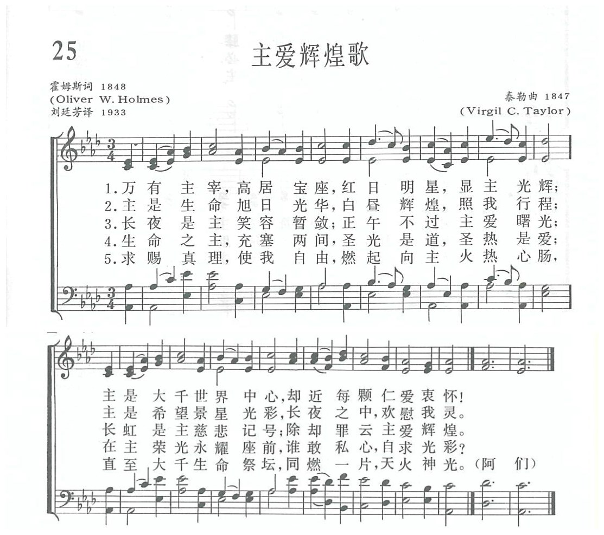
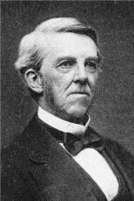

|
|
|
|
1 Lord of all being, throned afar, 2 Sun of our life, thy quickening ray 3 Our midnight is thy smile withdrawn, 3 Lord of all life, below, above, 4 Grant us thy truth to make us free, |
第025首《主愛輝煌歌》 |
|
https://www.zanmeishige.com/tab/13656.html?songbook=1&index=25
 Lord of All Being, Throned Afar
|
|
|
|
|


第025首《主愛輝煌歌》 https://www.youtube.com/watch?v=mXz2qcxNXIg&list=PLHzDHFJxRCRWU1KmaW40rL-f9emFJMCgq&index=25 - Lord of all being throned afar (Wendell Holmes)
https://youtu.be/bFz6OCkG8SY https://www.youtube.com/watch?v=6Al5stK48vs -
THIS HYMN "Lord of All Being, Throned Afar" is a hymn with text written by
American author Oliver Wendell Holmes Sr. It was described by John Julian as
"a hymn of great merit", and focuses on the theme of the omnipresence of
God.
https://youtu.be/OkTjRtTOX-A
| Text: | Lord of All Being, Throned Afar |
| Author: | Oliver Wendell Holmes |
| Tune: | LOUVAN |
| Composer: | Virgil C. Taylor |
| Short Name: | Oliver Wendell Holmes |
| Full Name: | Holmes, Oliver Wendell, 1809-1894 |
| Birth Year: | 1809 |
| Death Year: | 1894 |
Holmes, Oliver Wendell,

M.D, LL.D., son of the Rev. Abiel Holmes, D.D. of Cambridge, U.S.A., was born at Cambridge, Aug. 29, 1809, and educated at Harvard, where he graduated in 1829. After practising for some time in Boston, he was elected in 1847 to the chair of Anatomy, in Harvard. His writings in prose and verse are well known and widely circulated. They excel in humour and pathos. Although not strictly speaking a hymnwriter, a few of his hymns are in extensive use, and include:—
Tune Information
| Title: | LOUVAN |
| Composer: | Virgil Corydon Taylor (1847) |
| Meter: | 8.8.8.8 |
| Incipit: | 55123 12123 34323 |
| Key: | A♭ Major |
| Copyright: | Public Domain |
| Short Name: | Virgil Corydon Taylor |
| Full Name: | Taylor, Virgil Corydon, 1817-1891 |
| Birth Year: | 1817 |
| Death Year: | 1891 |
第25首 主爱辉煌歌 Lord of all being，throned afar _O.W．Holmes
经文：“诸天藉耶和华的命而造，万象藉他口中的气而成”(诗33：6)。
作者霍姆斯(O.W．Holmes，1809—1894)乃美国近代著名的解剖学教授、诗人和文学家，在哈佛大学毕业后进医学院，以后当过医生，留学欧洲，返国后任住院医师。他在哈佛大学读书时即以诗文闻名，曾为母校校庆写了纪念的诗歌。虽然医学是他的专业，但写作是他的业余爱好，而且在文坛上已享有盛名，与当代美国诗人、文豪都交往甚密。他曾发起创办《大西洋》杂志(月刊)，并且自己积极写稿。
1859年他在该刊上发表了一系列连载的散文，题为《教授在早餐桌前》；第12期刊登这篇文章的最后部分。结束之前他写道：“回顾一年的记载，这位‘教授’要求那些曾被文章所载而心里感到惶惑的人，能以心平气和下来，并且温和地要求读者们忘记眼前对于真理的不同见解，(因为人们总是以不同的有色眼镜来看待真理)而联合起来与我们从心里同唱下列这一首诗，共同赞美领导我们的光明之源。我们都需要这个光明来领导我们，因为只有这光的温暖能使我们成为弟兄。”接着便是这首诗，也就是全文的结束。原题为《一个星期日的圣诗》：
万有主宰高居宝座，红日明星显主光辉；
主是大千世界中心，却近每颗仁爱衷怀!
主是生命旭日光华，白昼辉煌照我行程；
主是希望景星光彩，长夜之中欢慰我灵。
对基督教的信仰，霍姆斯也是一个特殊的人物。他父亲是公理会①的牧师，但他自己长大成人之后却转宗皈依了惟一神教派②。他曾坦白地告诉人们说：“我信的比有的人多一些，也比有些人少一些。”人们认为他一半是神学家，一半是解剖学家。
曲调名为《鲁汶(LOUVAN)》，是美国音乐家泰勒(V.C．Taylor，l817一1891)③所谱。泰勒先后担任过几个礼拜堂的琴师，曾出版发行许多有19世纪中期特点的歌本。这个调乃是从他最有名的歌本《神圣的吟游诗人(SACRED MINSTREL)》中选出来的。
①公理会：16世纪后期产生于英国。主张各个教堂独立自主，由信徒公众管理，故称。主要分布于英、美等国。19世纪初传入中国。
②惟一神教派(神性惟一论)：又译作“上帝惟一论”派(Unitarianism)。又简称“一位论”。从古教会内就有类似该教派的思想，认为耶稣只是一个人，否认耶稣是神，反对三位一体的传统教义。1 7世纪以来流行于英美等国，成为一个教派。
③《新编》内有两位泰勒。请参阅作者索引。
https://www.xueshengshi.com/?p=5784
Words: Oliver Wendell Holmes, Sr. (b. Aug. 29, 1809; d.
Oct. 7, 1894)
Music: Louvan, by Virgil Corydon Taylor (b. Apr. 2, 1817;
d. Jan. 30, 1891)
Links:
Wordwise Hymns
The Cyber
Hymnal
Hymnary.org
Note: Holmes was an American medical doctor, and professor of anatomy and physiology at Harvard. His son (also named Oliver Wendell Holmes) became a supreme court justice. The father was a Unitarian, but not narrowly so. He greatly loved the evangelical hymns of the church. He summed up his faith by saying he “believed more than some and less than others.”
The present hymn’s ecumenical spirit should not distract us from the profound vision it presents of Almighty God. The author called it a hymn “to the Source of the light we all need to lead us, and the warmth which alone can make us all brothers.” The hymn was published in 1848.
Bigness is sometimes difficult to grasp, perhaps because it’s so relative. To an ant, we must appear to be very big. But to an elephant, not so much so. To a small child, a dollar may seem a considerable amount. But to adults grappling with a mortgage, and trying to comprehend a national debt of billions (or trillions!), it’s insignificant.
Considered one way, planet earth is big, but not in comparison to the vastness of space. One source says current scientific theory estimates that the universe is about 92 billion light years across–a light year being the distance light can travel in that time, flashing through space at 186,000 miles per second.
It’s difficult to get our minds around that! And when we turn to spiritual things, we are faced with even more mind-boggling truths. In the Bible, the Lord asks rhetorically, “Do I not fill heaven and earth?” (Jer. 23:24). That’s mighty big! In truth, “heaven and the heaven of heavens cannot contain Him” (II Chron. 2:6). And being God, He’s not partly here, and partly on Mars or Venus, or some place else, but is completely present everywhere at once.
The amazing thing is that this infinitely great God has stooped to show compassion on us, small, pitifully weak creatures that we are. Not only that, but He desires to communicate with us and fellowship with us. And when sin got in the way of that, He sent His Son to take sin’s punishment in our place (I Cor. 15:3), so we might be fitted for an eternal and intimate relationship with Him. Holmes has given us at least a glimmering of this paradox–of the bigness and remoteness of God, contrasted with His nearness and accessibility.
You won’t find many doctrinal specifics here, but the hymn gives us a sense of the immensity of God, and His transcendent glory. In a series of poetic metaphors, the author stretches our thinking to behold, at least in terms finite beings can grasp, something of the infinite.
CH-1) Lord of all being, throned afar,
Thy glory flames from sun and star;
Centre and soul of every sphere,
Yet to each loving heart how near!
CH-2) Sun of our life, Thy quickening ray,
Sheds on our path the glow of day;
Star of our hope, Thy softened light
Cheers the long watches of the night.
CH-3) Our midnight is Thy smile withdrawn;
Our noontide is Thy gracious dawn;
Our rainbow arch, Thy mercy’s sign;
All, save the clouds of sin, are Thine.
Finally, Holmes envisions the sublimation of self-will, and any attempt to feed our own pride, as we “ask no lustre of our own,” but simply offer ourselves as “living altars” aflame for God (cf. Rom. 12:1).
CH-4) Lord of all life, below, above,
Whose light is truth, whose warmth is love,
Before Thy ever blazing throne
We ask no luster of our own.
CH-5) Grant us Thy truth to make us free,
And kindling hearts that burn for Thee,
Till all Thy living altars claim
One holy light, one heavenly flame.
Questions:
1) What feelings do you have of God and yourself, when you read the
stirring words of Holmes’s hymn?
2) What would you answer sometime who asked: Why would an infinite God give attention to weak and finite creatures such as we are?
https://wordwisehymns.com/2015/05/22/lord-of-all-being-throned-afar/